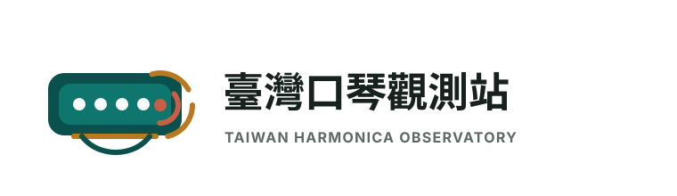
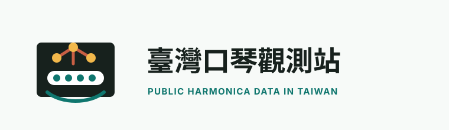
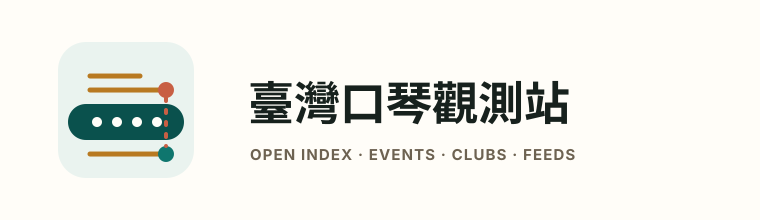
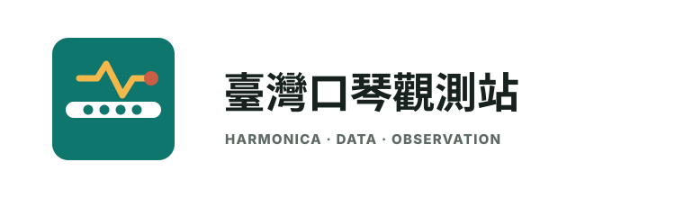

臺灣口琴觀測站 Branding Choices
同一個極簡資料節點方向，分成四種可落地的 SVG 標誌語氣。

A. Signal Row
最像網站主標，口琴與 RSS 訊號清楚。

B. Node Wave
比較開源資料感，節點語彙更明顯。

C. Civic Ledger
比較文化資料庫、公共索引站。

D. Compact Pulse
最適合 favicon、GitHub avatar、小尺寸。